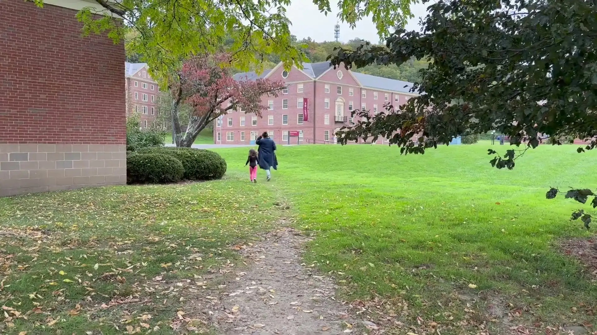

Integrated Marketing Communications | Content, Digital & Event Strategy
Carson Kelly
Associate Marketing Communications Manager at XiFin
Hi, I’m Carson — a marketing communications strategist specializing in integrated content, digital engagement, and event marketing. I build data-driven programs that strengthen brand authority and drive measurable growth.

229,000+social impressions at XiFin in 2025
33%more social interactions, year over year
43+events supported in 2025
“Carson is an indispensable contributor who brings a rare combination of reliability, creativity, and attention to detail. She has earned the trust and credibility to lead creative strategy and data-driven marketing.”
Timothy Marcacci, Manager, XiFin
Selected work
Work samples
 XiFin · WebsiteXiFin Payor Intelligence HubI led the redesign from wireframe to launch, designed the hub, and keep its content current every month.
XiFin · WebsiteXiFin Payor Intelligence HubI led the redesign from wireframe to launch, designed the hub, and keep its content current every month. XiFin · WebsiteSpecialty Pharmacy at a Crossroads: Navigating Access, Complexity, and…I ghostwrote this executive thought-leadership article for XiFin.
XiFin · WebsiteSpecialty Pharmacy at a Crossroads: Navigating Access, Complexity, and…I ghostwrote this executive thought-leadership article for XiFin. UMass Amherst · FacebookWe asked #UMassAmherst students what they are thankful for! 🦃 Add your…From concept to post: I brainstormed, filmed, edited and published this campus video.
UMass Amherst · FacebookWe asked #UMassAmherst students what they are thankful for! 🦃 Add your…From concept to post: I brainstormed, filmed, edited and published this campus video. Maison Il Conservatorio · InstagramContinental Breakfast has never looked better!!I brainstormed the concept, then filmed, edited and published it.
Maison Il Conservatorio · InstagramContinental Breakfast has never looked better!!I brainstormed the concept, then filmed, edited and published it.
Videography · Google DriveSophie Schilling Dance DocumentaryI conceived, filmed and edited this documentary from start to finish. XiFin · LinkedInThe future of revenue cycle management isn't just about automating more tasks.Concept to publish: I brainstormed, filmed, edited and posted it for XiFin.
XiFin · LinkedInThe future of revenue cycle management isn't just about automating more tasks.Concept to publish: I brainstormed, filmed, edited and posted it for XiFin.
Let’s connect.
Feel free to connect with me on LinkedIn — I’m always open to new ideas and collaborations.